PENNSYLVANIA
Trail Review
Maryland
West Virginia
Home
Meeks Run and Oil Well Trail Loop
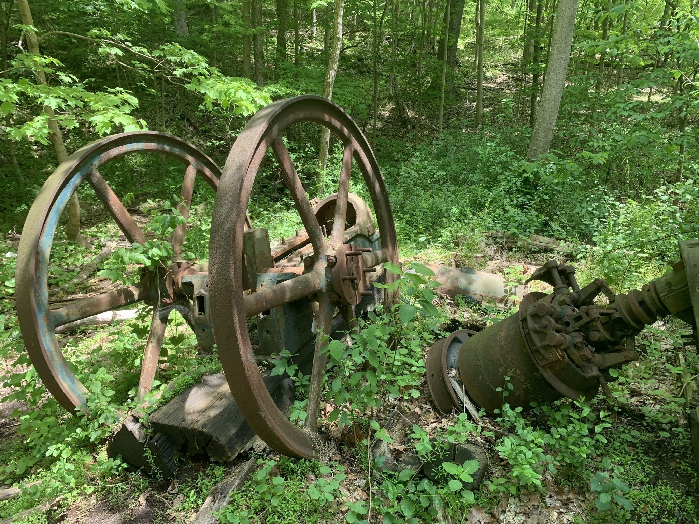
Meeks Run and Oil Well Trail Loop is a 1.8 mile moderately trafficked loop trail located near Pittsburgh, Pennsylvania that features a river and is good for all skill levels. The trail offers a number of activity options and is accessible year-round. Dogs are also able to use this trail. This trail is part of the Montour Woods Conservation Area.The Oil Well Trail begins from the Hassam Road Trailhead and and meanders along in an east/west orientation to the Downing Drive Trailhead. This one can be taken in either direction, and the way is easy navigation either way. Follow the easy, rolling trail from west to east, and you meet up with the Meeks Run Trail. From either end of the Oil Well Trail, you'll be able to access other trails in the area. The Moon Township Community park is located to the west, and the Montour Woods Conservation area is located to the southwest, making route building possible and recommended.
Meeks Run Trail Map
Meeks Run Trail
×
Fall Run Trail
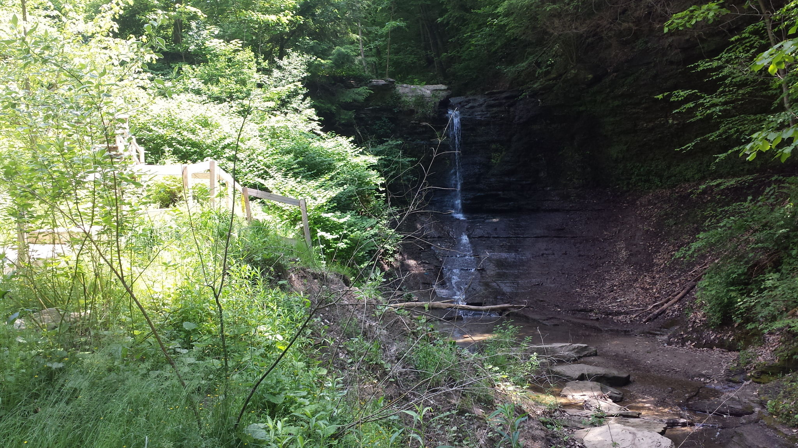 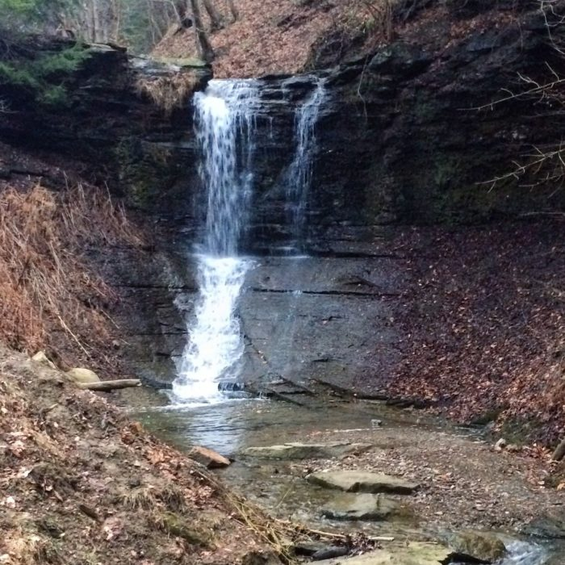
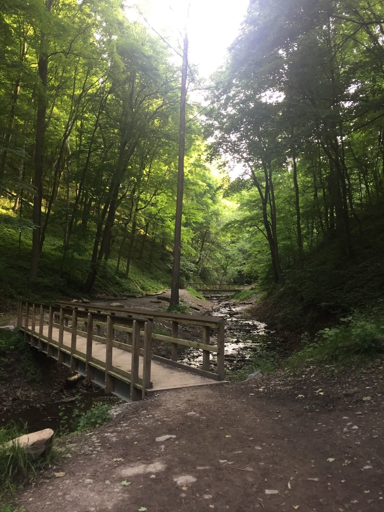
Fall Run Trail is a 1.4 mile moderately trafficked out and back trail located near Glenshaw, Pennsylvania that features a waterfall and is good for all skill levels. The trail offers a number of activity options and is accessible year-round. Dogs are also able to use this trail but must be kept on leash.Fall Run Park gets its name because it is nestled in a small valley where many streams on the high ground empty into the park, creating waterfalls. The main hiking trail leads to a waterfall that is the focal point of the park, with roughly a 30 foot drop that you can experience from ground level or from above thanks to a staircase found along the side. Just be careful around the top as there is absolutely no infrastructure in place for safety, you can literally dangle over the edge (not that we recommend it).
Fall Run Trail Map
Fall Run Trail
×
Monongahela Incline
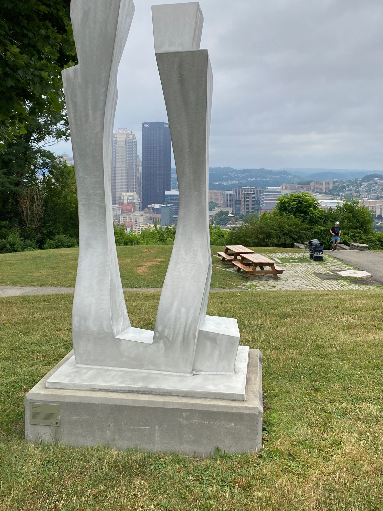 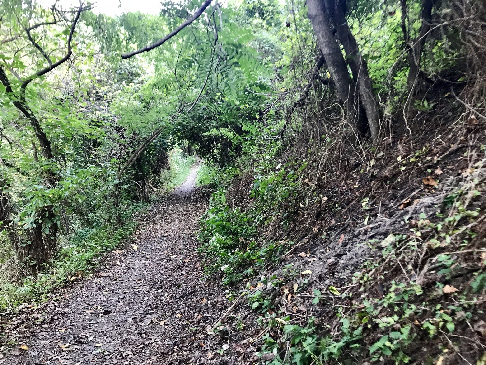 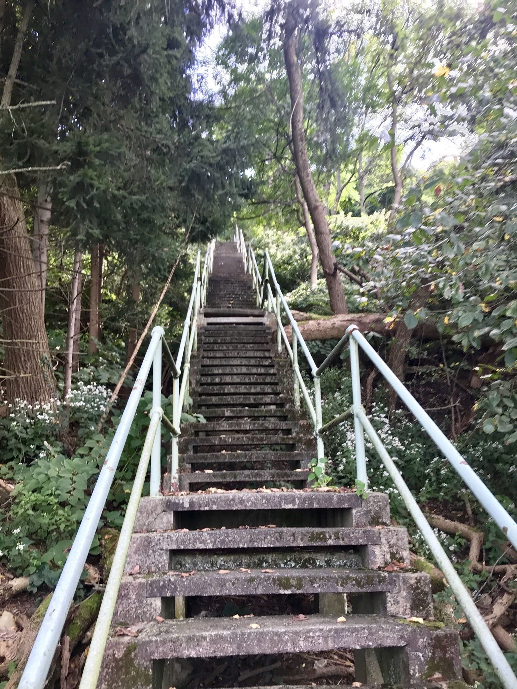
Monongahela Incline is a 1.7 mile lightly trafficked loop trail located near Pittsburgh, Pennsylvania that offers scenic views and is good for all skill levels. The trail is primarily used for hiking, walking, and nature trips and is best used from April until October. Dogs are also able to use this trail but must be kept on leash.
Monongahela Incline Map
Monongahela Incline
×
Panhandle Trail
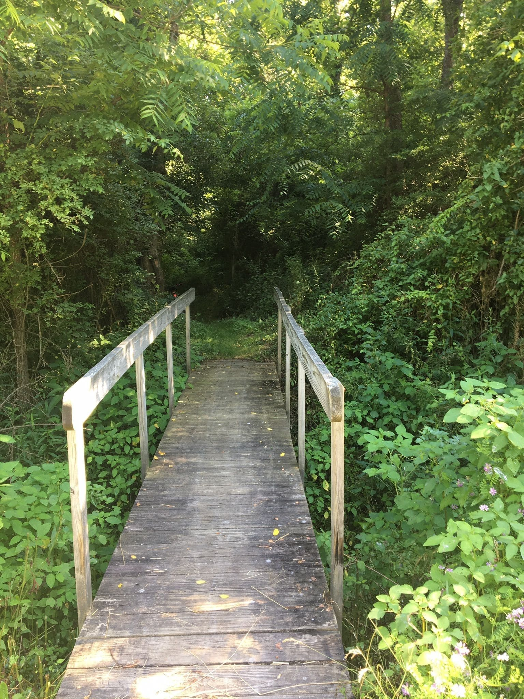 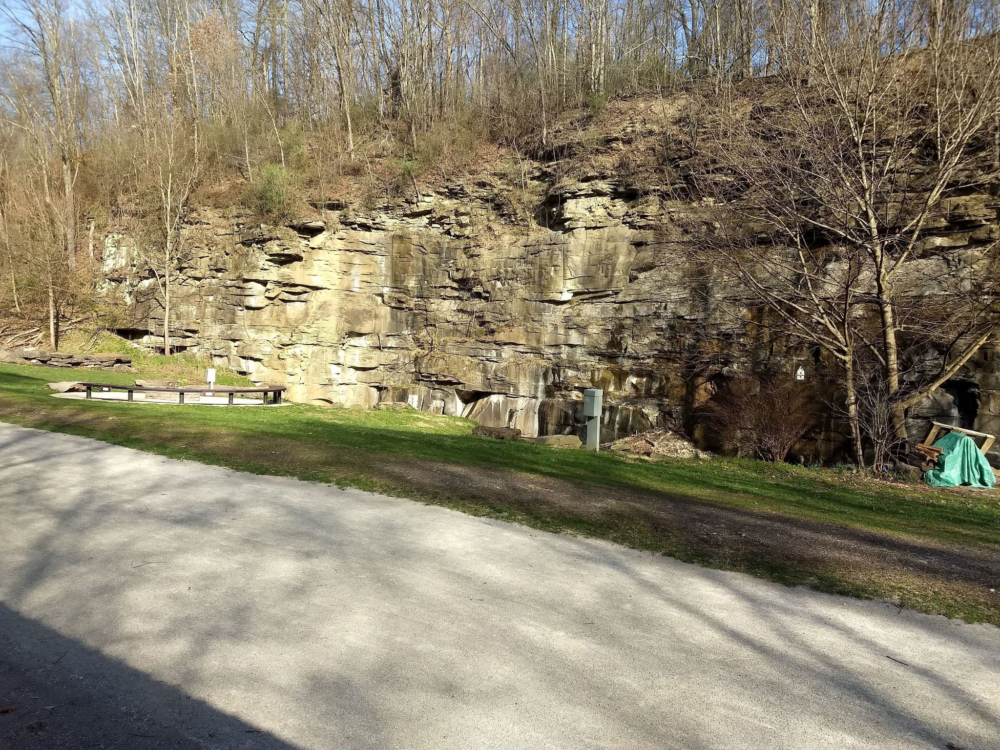 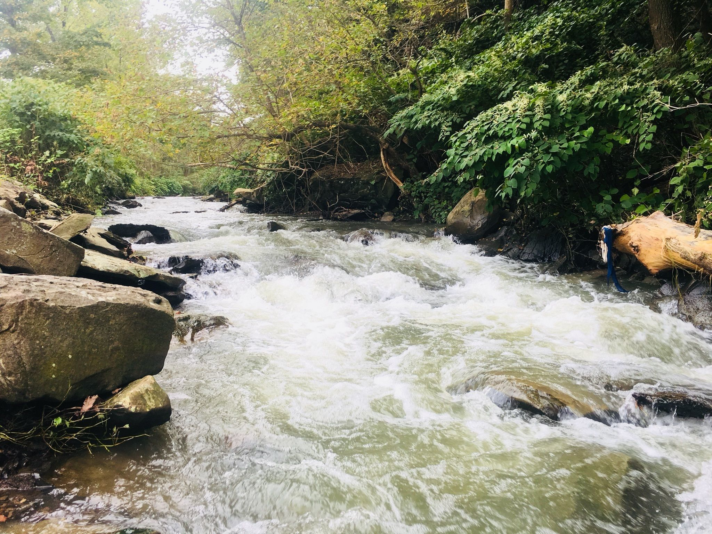 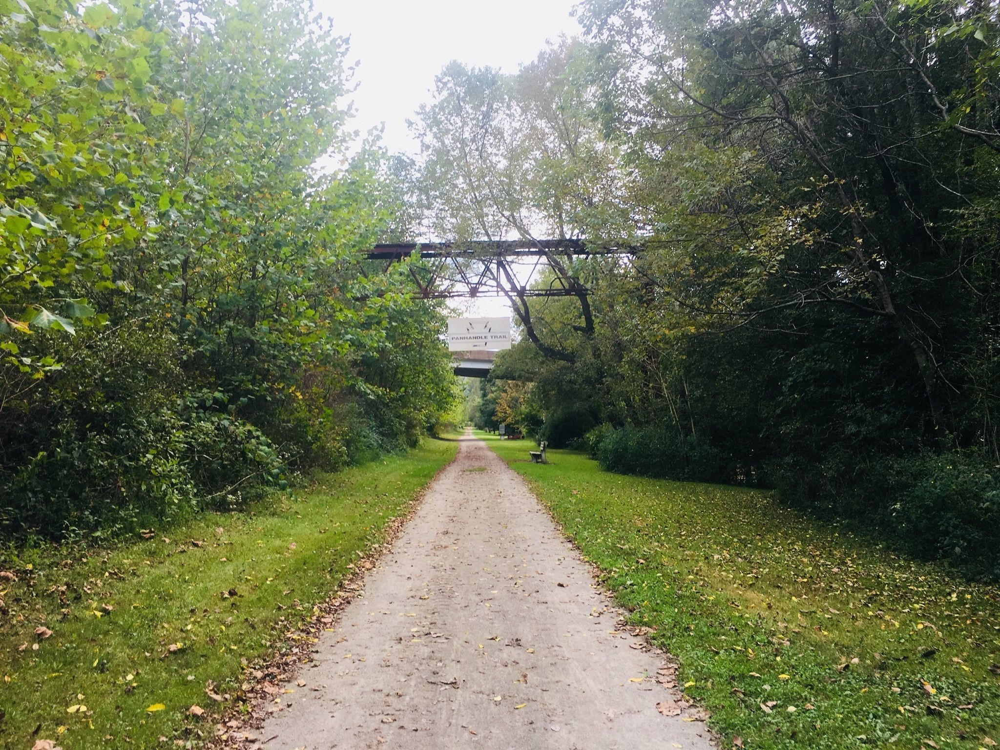
The Collier Friends of the Panhandle Trail maintains the approximately 2.4 miles of the Panhandle Trail from Walkers Mill Entrance to Gregg Station.The Panhandle Trail is named after the Panhandle Division of the Pennsylvania Railroad, the abandoned rail line upon which it is built.The Panhandle Trail stretches for 29 miles from Walkers Mill in Collier Township, PA to Colliers, WV.As of August 2008, the entire trail is complete from Collier Township, PA to Colliers WV.
Panhandle Trail Map
Panhandle Trail
×
Settler's Cabin Park
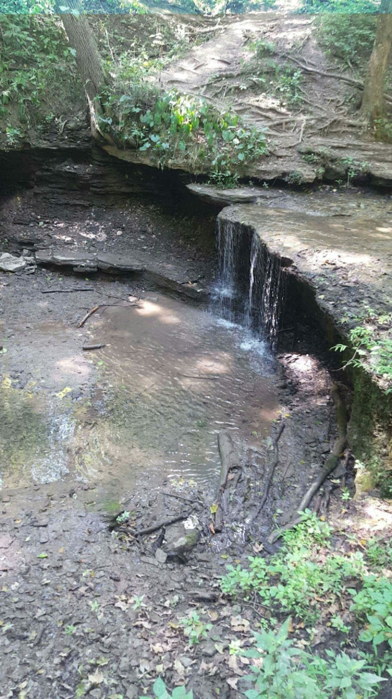 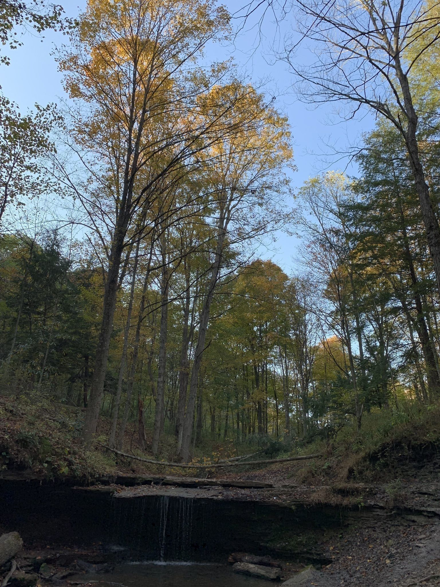 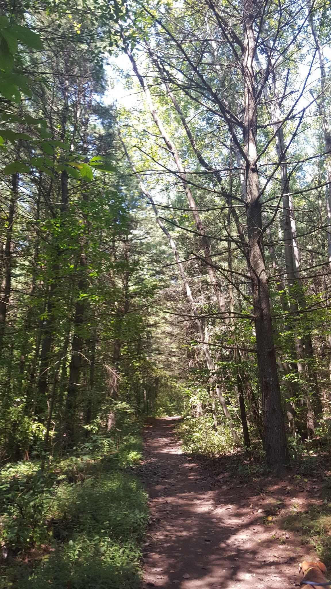 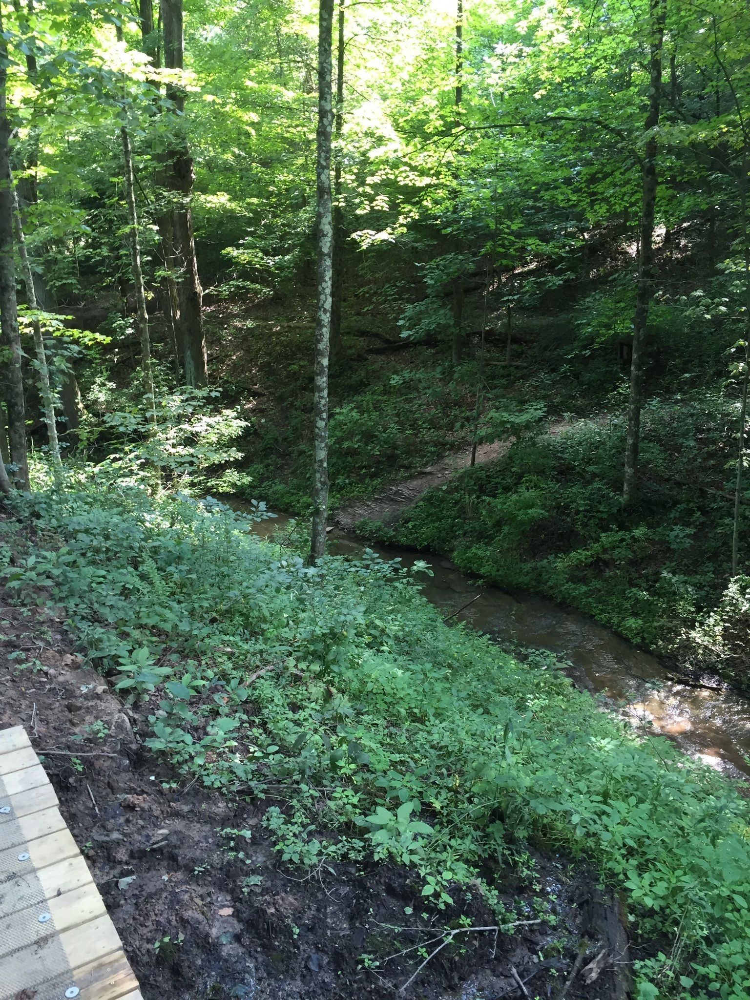
The Green Loop Trail at Settler's Cabin Park in Carnegie, Pennsylvania is an easy 1.7 mile hike featuring a small 4 foot waterfall. From the parking lot, head south at the trailhead and follow the green and blue blazed trail south until you hit a fork in the trail. Take a right-hand turn and continue following the green blazes to reach the waterfall only about 0.3 miles into the hike.
Settler's Cabin Green Loop Trail Map
Settler's Cabin Green Loop Trail
×